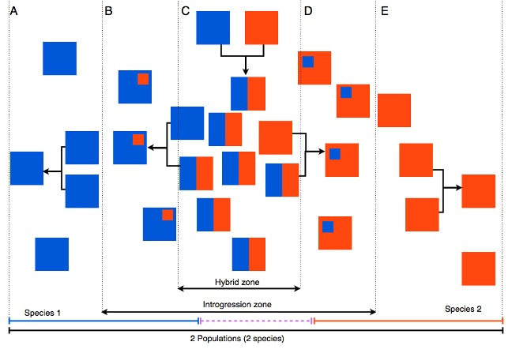
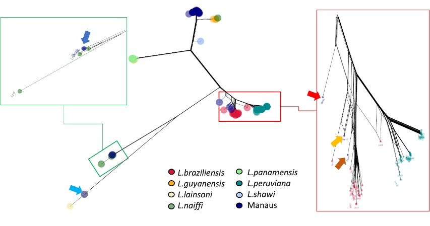
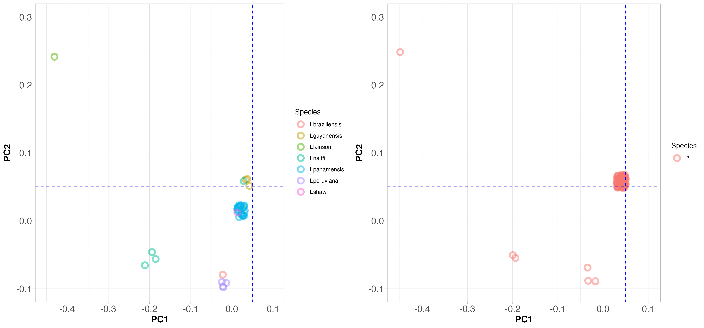

BIO00056I
Workshop 6: Population Genomics
1 Learning objectives
The aims of this workshop are to:
- Learn more about population genomics data
- View a real-world example of population structure analysis
- To appreciate how population genomics can be applied to eco-epidemiology (the study of the ecology of infectious diseases)
2 Introduction
2.1 Evolution, populations and genome data
You will be aware now from earlier on in this module that:
Sometimes hybrids occur between these closely related species.
Most species contain multiple populations. Genetically, a population is a group of individuals more closely related to each other than to other groups, reflecting shared ancestry.
In practice, it can be hard to tell which population—or even which species—an individual belongs to, especially for microorganisms. In this workshop, we’ll use genome data to investigate these questions
In Figure 1 below, each box represents a population that contains mant individuals. Red and blue boxes represent two species. Some regions have hybrids (mixed colors), and some do not. Some populations show a little mixing; others show a lot.
 Figure 1: Imagined populations of two species (red and blue), with some hybrids and varying levels of mixing.
2.2 The topic for today
In this workshop, we’ll look at new genome data from Leishmania parasites collected in the Amazon. Leishmania are single-celled protozoan parasites that infect mammals, including people. They have two copies of each chromosome (diploid) and reproduce sexually (they undergo meiosis).
We’ll focus on Leishmania guyanensis and closely related species found in South America. Together they form a species complex called Viannia—closely related species that can sometimes interbreed where their ranges overlap.
These parasites cause cutaneous leishmaniasis (CL), a skin disease that leads to long-lasting sores. CL is zoonotic, meaning it mostly circulates in wild animals; humans are infected but probably play a small role in maintaining the parasite population.
Because Viannia parasites infect many native mammals in South America, they are probably deeply embedded in the region’s ecology.
2.2.1 Leishmania are spread by sand flies
Three facts about sand flies are important for today:
- Sand flies are mainly found in forests or forest edges (not in sand on the beach)
- They are not strong flyers, so they don’t carry Leishmania parasites very long distances.
- The different sand flies species, and even populations within species, have their own ecological niches and characteristics.
- For example, certain populations of sand flies carry some species of Leishmania, but not others.
2.3 The data we use in this workshop
We’re studying the genetics of the Viannia group of Leishmania parasites. The analysis is being carried out at the University of York, working with colleagues in Manaus, Brazil—a large city on the Amazon River surrounded by the Amazon Rainforest. Because the Amazon is so biodiverse, several Viannia species may be present there.
Parasites were isolated from patients with cutaneous leishmaniasis (CL) and grown in the lab to extract DNA. We then sequenced the DNA from 70+ parasites using short-read (Illumina) sequencing.
From these genomes, we identified single-nucleotide polymorphisms (SNPs)—tiny differences at single DNA letters. To add context, we also included public data for related Viannia species from the European Nucleotide Archive. A short summary of the computational steps is at the end of this document.
For this workshop, all you need to know is that we have SNP data from:
- 71 Leishmania strains collected in Manaus (mostly likely to be L. guyanensis)
- 21 L. braziliensis strains from various locations in Brazil
- 25 L. panamensis strains from Panama
- 34 L. peruviana strains from Peru
- one L.shawi strain from Brazil
We’ll use these data to explore species, populations, and mixing (hybridization) within the Viannia group.
3 Exercises
3.1 Exploring the data
In this workshop we will explore the results we generated. We will look at three ways to visualise population structure.
3.1.1 Population genomic data files
While genomes contain many types of polymorphisms, population genomic analysis often uses only single nucleotide polymorphisms (SNP) data. This is because SNPs are very abundant and they have some properties that make them easier to model mathematically.
SNPs and other polymorphisms are affected by many processes, such as genetic drift, migration, selection and recombination. However, it can be represented relatively simply as a table.
Teh standard format for representing SNP data is called VCF (Variant Call Format). Here is a small example of what a VCF file looks like.
#CHROM POS REF ALT Lg1 Lg2 Lg3 Lg3
01 2177 A G 0/1 1/1 1/1 0/1
01 2636 G A 0/0 0/1 0/1 0/0
01 9844 G A 0/1 0/0 0/0 0/0
...
35 9999 G A 1/1 0/0 0/1 0/0It is almost like a table that we could lod into Excel, where each row indicates position in the genome, and columns contain information about that position.
It has a header line:
#CHROM POS REF ALTThis indicates that the first column is the chromosome number (#CHROM), the second column is the position on that chromosome (POS), the third column is the reference allele (REF) and the fourth column is the alternative allele (ALT).
After this, we have the genotypes for each sample. In this example, there are four samples:
Lg1 Lg2 Lg3 Lg3After this, we have the genotypes for the strains that are in the VCF (four in this case). They are coded as 0 for the reference allele (A), 1 for the second allele (G), so for an A/G polymorphism:
- AA is coded as
0/0 - AG is coded as
0/1 - GG is coded as
1/1
The population genomics community has developed many software tools that process this data to extract some of this information (no tool does it all). In this workshop we will look at a phylogenetic tree, principal components analysis (PCA) and a STRUCTURE plot. These are all used to describe population structure and detect hybrids between populations or between species.
3.2 Phylogeny
A phylogenetic tree is a good first look at how similar or different many samples are. But when individuals mix between populations or species (hybridization), a simple branching tree can be misleading.
Think of a tree of people grouped by ancestry. Where would you place someone with one parent from Spain and one from Fiji? They don’t fit neatly on a single branch with the Spanish and the Fijians. The same data display issue can happen in nature when populations interbreed.
To handle this, we used a network approach (a splits network made with the software SplitsTree) that can show conflicting signals in the data—like those caused by mixing between populations or species.
Below is our SplitsTree network. There are many samples, so coloured dots cluster tightly. The Manaus samples are dark blue. Most cluster near Leishmania guyanensis at the top. We marked the Manaus samples that don’t with arrows.
 Figure 2: A SplitsTree phylogeny.
3.2.1 Discuss these questions
From this figure, do the Viannia species look clearly separated or do some overlap?
A few Manaus samples don’t cluster with L. guyanensis. What could explain that?
What might this suggest about the causes of CL in the Amazon (e.g., multiple species, local ecology, host/vector differences)?
Look at the L. peruviana–L. braziliensis area (red box). One strain sits between the two. What could that indicate?
Examine the data from the single L. shawi sample (light blue). Does its branch look unusually long? Remember: longer branches usually mean more mutations (this isn’t a dated tree, just a measure of genetic differences).
3.3 Principal components clustering
Population structure is an important facet of most (if not all) species. Populations sometimes split into species, and all natural selection begins within a population. So when we start to examine the genetic diversity of a species, it is wise to look at population structure.
Principal components analysis (PCA) is a useful tool for understanding population structure. PCA reduces the variables in our data set (thousands of SNPs in our rows, and many individuals in columns), while preserving a lot of the information about population structure.
A simple way to interpret PCA data is by considering that the distance between two individuals on a two-dimensional PCA plot is a representation of the genetic distance between those samples. So, if they are close on the plot, they are close genetically. And if they are distant in the plot, they are distant genetically. We would expect individuals from within a population, or a species to fall close to each other on a PCA plot.
First look at Figure 3 below. This shows PCA clustering of all the other Viannia species, apart from the samples we collected from Manaus. Discuss with the people at your table:
- Do the species cluster genetically?
- Do L. peruviana and L. braziliensis really look like two different species?
Note: The blue dashed lines are a guide to the eye to help you see the clusters.

Now look at Figure 4, which shows PCA clustering of all the other Viannia species from throughout South America (on the left), and those that were collected from Manaus (on the right). Note that the PC axes are on the same scale here.

Discuss with the people at your table:
- Does it look like the samples that came from Manaus are all the same species?
- Since we ensured the positions on the PCA plot identify the species, does it help to identify the species from Manaus?
- What does this tell you about the causes of cutaneous leishmaniasis in the Amazon region?
- Since Leishmania are single celled organisms, and they all cause a simular disease, population genomics is the only way to identify which sample belongs to which species.
- If we used PCR, we would need to know which species we were looking for in advance, and design primers accordingly. This would be difficult since we do not know which species are present in Manaus.
3.3.1 Principal components clustering: interpretation by location
We can look at the PC plots another way, simply by colouring the samples according to where they came from. Because sand flies don’t fly very far, it is possible that each genetic population occupies just one area.
The genome data we downloaded from the nucleotide archive came from Brazil, Peru and Panama which are far apart. So perhaps the species definitions that the scientists have given the strains do not explain the data very well. Let’s have a look.
Note: In the Figure 5 below, the colour of each point indicates the location where the sample was collected, but the position on the PCA plot indicated how closely related the samples are genetically.